⚠️ SHARED ENVIRONMENT
We are all working in the same AWS account today. You will see other participants' resources. Only interact with resources that have YOUR name on them. Do not stop, terminate, or modify anyone else's resources.
📝 Naming Convention: Use your first name in everything you create today.
Instance name: AfChix-Grace | Key pair: key-grace
Step 1: Accept Your Invitation & Sign In
Part A: Accept the Invitation (before the workshop)
- Check your email for a message from no-reply@login.awsapps.com with subject "Invitation to join AWS IAM Identity Center"
- Open the email — you will see a green "Accept invitation" button, your portal URL, and your username
- Click "Accept invitation"
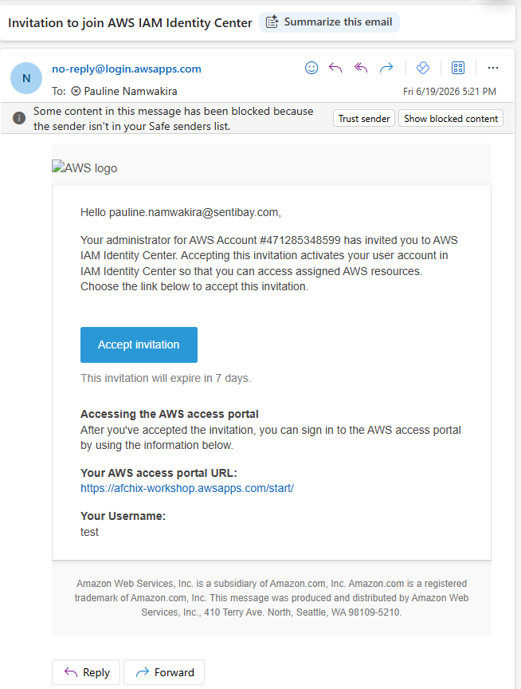
The invitation email you'll receive
- You'll see a "New user sign up" page with your username pre-filled
- Create a password (suggestion:
AfChix2026!)
- Confirm your password and click "Set new password"
- You'll see: ✅ "Successfully created [your username]"
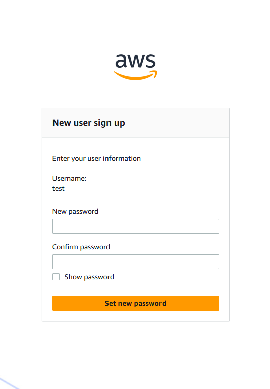
Create your password on this page
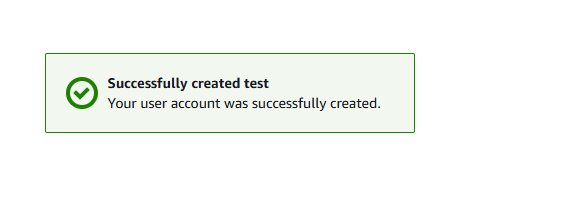
Success! Your account is ready
Part B: Sign in (on the workshop day)
- Go to the portal URL the trainer shares on screen
- Enter your Username and click Next
- Enter your Password and click Sign in
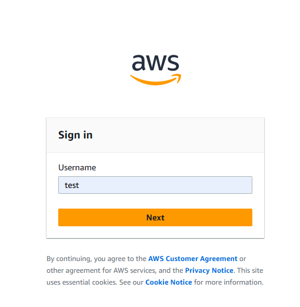
Enter your username first
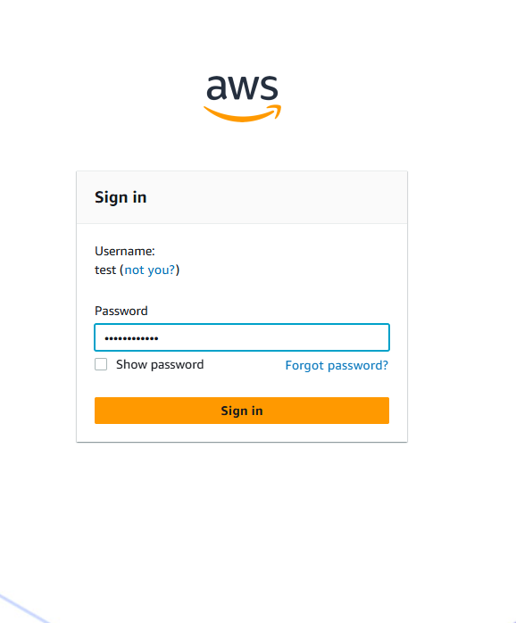
Then enter your password
Part C: Enter the AWS Console
- You'll see the "AWS access portal" page with one account listed
- Click the arrow (▶) next to the account name to expand it
- Click "Access keys" or the role name to open the Console
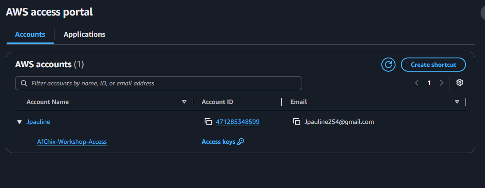
Click the account, then click to enter the Console
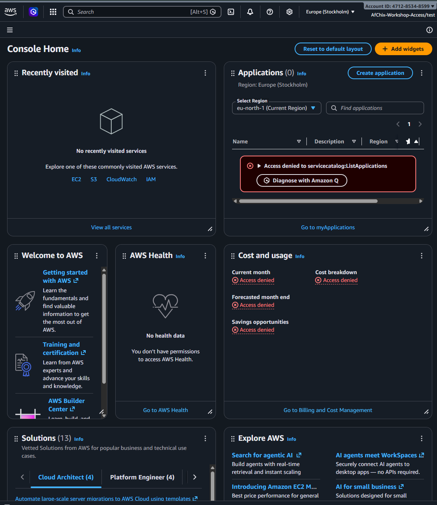
You're in! This is the AWS Management Console
💡 What is this? This is the AWS Console — the control panel where cloud engineers manage all their cloud resources. Think of it as a building manager's dashboard where you can see and control every apartment in the building.
Step 2: Navigate to EC2
- At the top of the page, click the search bar
- Type: EC2
- Click EC2 in the dropdown results (under "Services")
- You are now in the EC2 Dashboard
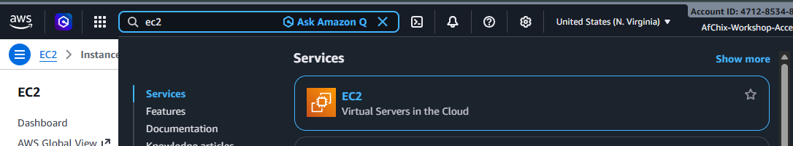
Search for EC2 in the top bar
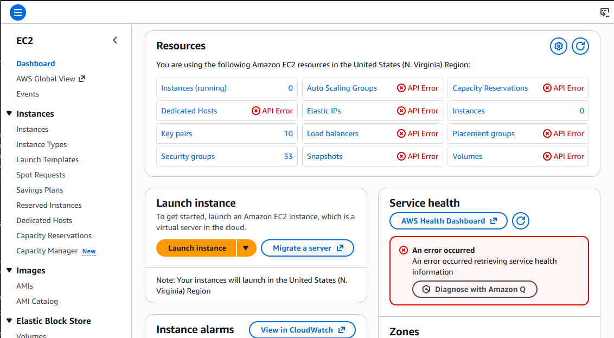
The EC2 Dashboard - your virtual machines control center
Check your Region: Look at the top-right corner. It should say US East (N. Virginia). If not, click the dropdown and select it.
💡 What is EC2? EC2 = Elastic Compute Cloud. It lets you rent virtual computers (called "instances") in AWS data centers. Think of it as renting a laptop that lives in the cloud — except it's much more powerful and you can access it from anywhere.
Step 3: Launch a Windows Instance
This is where the fun begins. You're about to create a virtual computer running Windows — in the cloud!
3.1 Start the Launch Wizard
Click the orange "Launch instance" button.
3.2 Name Your Instance
Under "Name and tags", type: AfChix-YourName (e.g., AfChix-Grace)
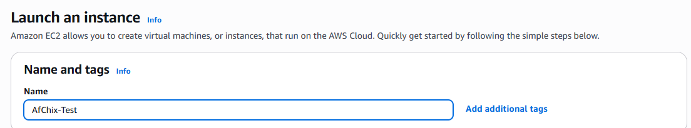
Give your instance a name with YOUR name in it
3.3 Choose Windows
- Under "Application and OS Images", click the "Windows" tab
- Select "Microsoft Windows Server 2025 Base" (Free tier eligible)
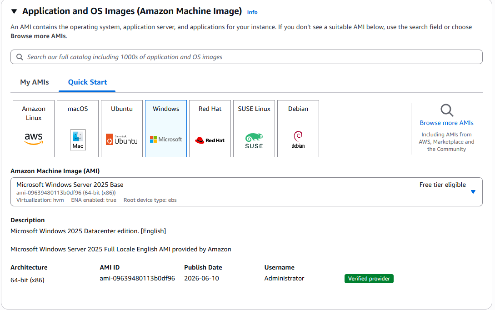
Click the Windows tab and select Windows Server 2025
💡 What is an AMI? AMI = Amazon Machine Image. It's a template that tells AWS which operating system to install. We picked Windows because most people are familiar with it.
3.4 Choose Instance Size
Under "Instance type", change from t3.micro to t3.medium (2 vCPU, 4 GiB memory).
💡 What is an instance type? This is the "size" of your virtual computer. Think of it like choosing between a studio apartment (t3.micro, 1GB RAM) and a one-bedroom (t3.medium, 4GB RAM). Windows needs more space to run smoothly.
3.5 Create a Key Pair
⚠️ Do NOT select from the dropdown! You may see other people's key pairs there. Always click "Create new key pair".
- Click "Create new key pair"
- Key pair name:
key-yourname (e.g., key-grace)
- Key pair type: RSA
- Format: .pem
- Click "Create key pair"
- A
.pem file will download — keep this file safe!
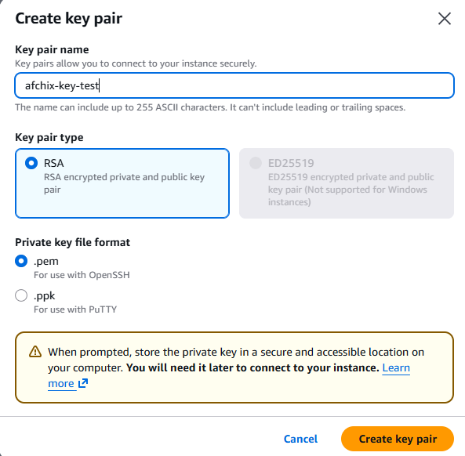
Fill in your name and click Create key pair
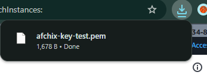
The .pem file downloads to your computer
💡 What is a key pair? It's like a special lock and key for your machine. The .pem file is the "key" that proves you're the owner. Without it, you can't get the password to log in.
3.6 Network Settings (Firewall)
Click "Edit" on the Network settings section, then check these boxes:
- ✅ Allow RDP traffic from — Anywhere (0.0.0.0/0)
- ✅ Allow HTTP traffic from the internet
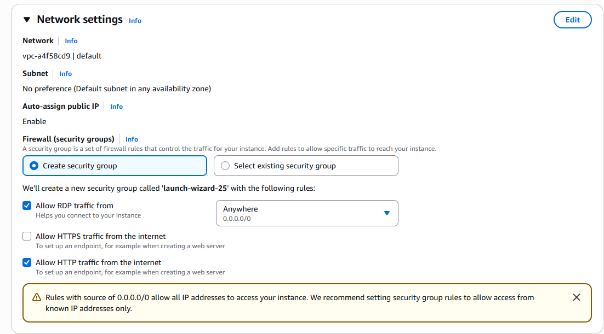
Make sure RDP and HTTP are both checked
💡 What are these? Think of them as doors on your apartment:
• RDP (port 3389) = the door YOU use to walk in and control your machine
• HTTP (port 80) = the shop window that lets visitors see your website
3.7 Launch!
- Leave everything else as default
- Click the orange "Launch instance" button at the bottom
- You'll see: ✅ "Successfully initiated launch of instance"
- Click "View all instances"
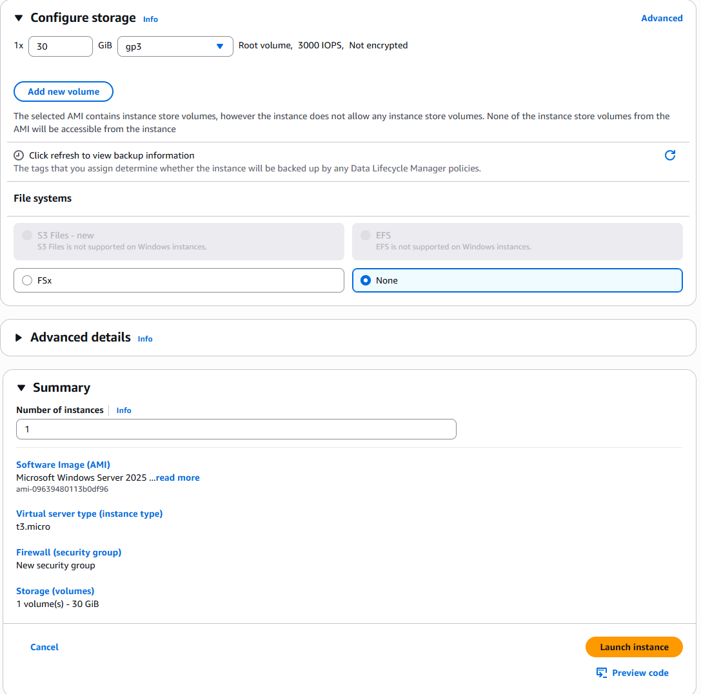
Success! Your virtual machine is being created
3.8 Wait for Your Instance to Start
Look for your instance in the list. Wait until:
- Instance state: Running (green dot) ✅
- Status check: 3/3 checks passed ✅
This takes 3-5 minutes — be patient!
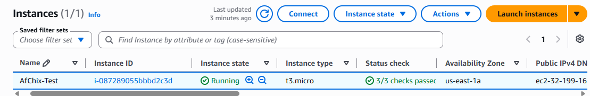
Your instance is running and all health checks passed
💡 You just rented an apartment in a building (AWS data center) in Virginia, USA. It's being prepared for you. "Running" means your apartment is ready to move in!
Step 3B: Explore Your Instance (Quick Tour)
Click your instance name to see its details. You'll see several tabs — let's explore what each one shows:
Details Tab
The "ID card" of your virtual machine:
| Field | What it means |
|---|
| Instance ID | Unique serial number (e.g., i-087289055bbbd2c3d) |
| Instance state | Running, stopped, or terminated |
| Instance type | The size: t3.medium (2 vCPU, 4 GiB RAM) |
| Public IPv4 address | Your machine's internet address — used to connect and view website |
| Private IPv4 address | Internal address only visible within AWS |
| VPC ID | The virtual network your machine lives in |
| Availability Zone | The specific data center (e.g., us-east-1a) |
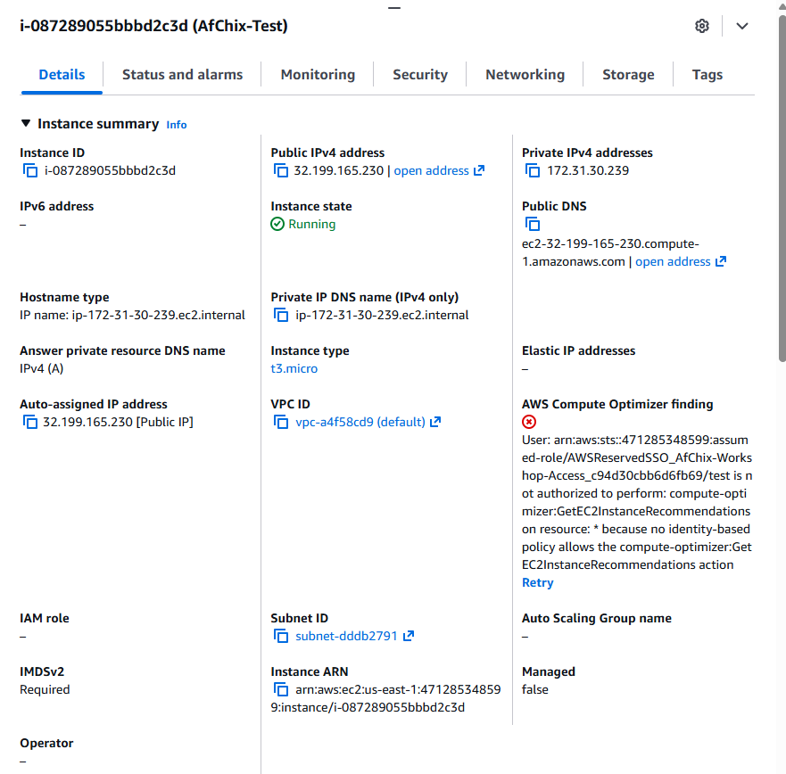
The Details tab shows all the key info about your machine
Status and Alarms Tab
Health checks — AWS monitors your machine continuously. All three should show ✅ "Check passed":
- System status check ✅
- Instance status check ✅
- EBS status check ✅
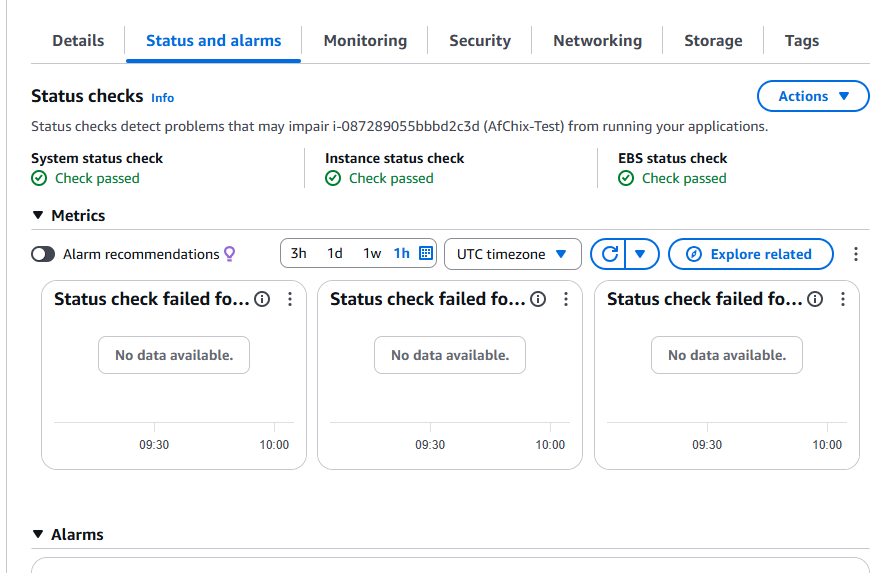
All checks passed — your machine is healthy
Monitoring Tab
Performance graphs showing CPU usage, network traffic, and more. Like the electricity meter in your apartment.
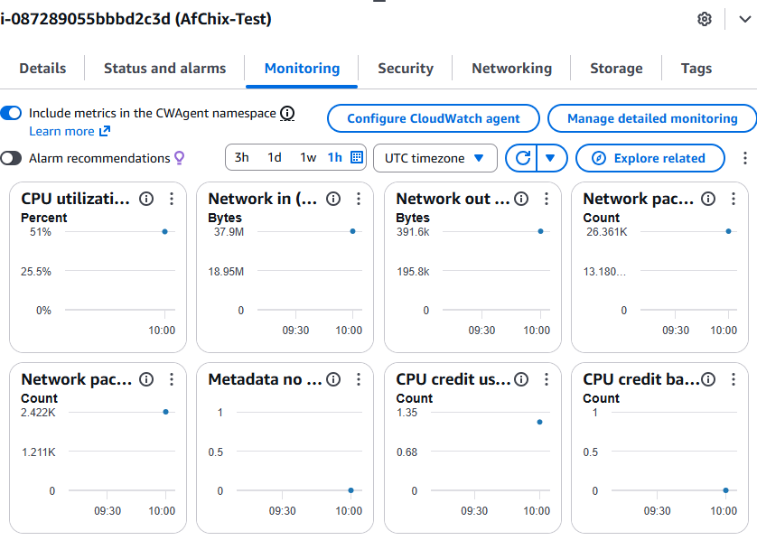
Live performance metrics of your virtual machine
Security Tab
Shows which "doors" are open on your machine:
- Port 3389 (RDP) — allows remote desktop connections
- Port 80 (HTTP) — allows web traffic for your website
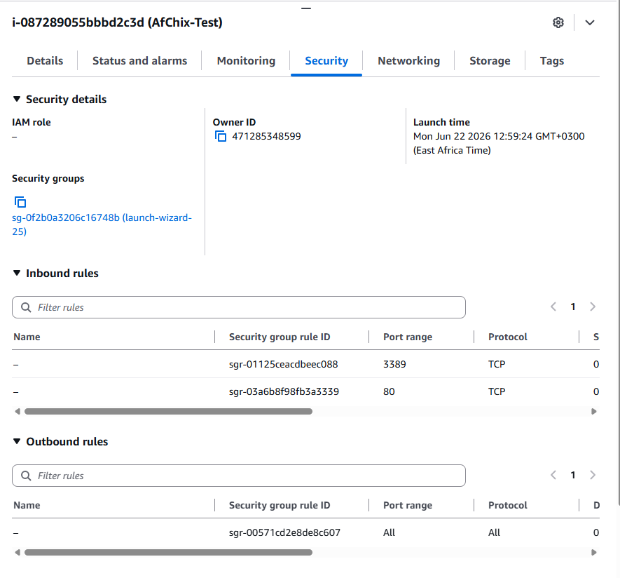
Inbound rules: RDP (3389) and HTTP (80) are open
Networking Tab
Shows your VPC (virtual network), subnet, public DNS, and IP addresses.
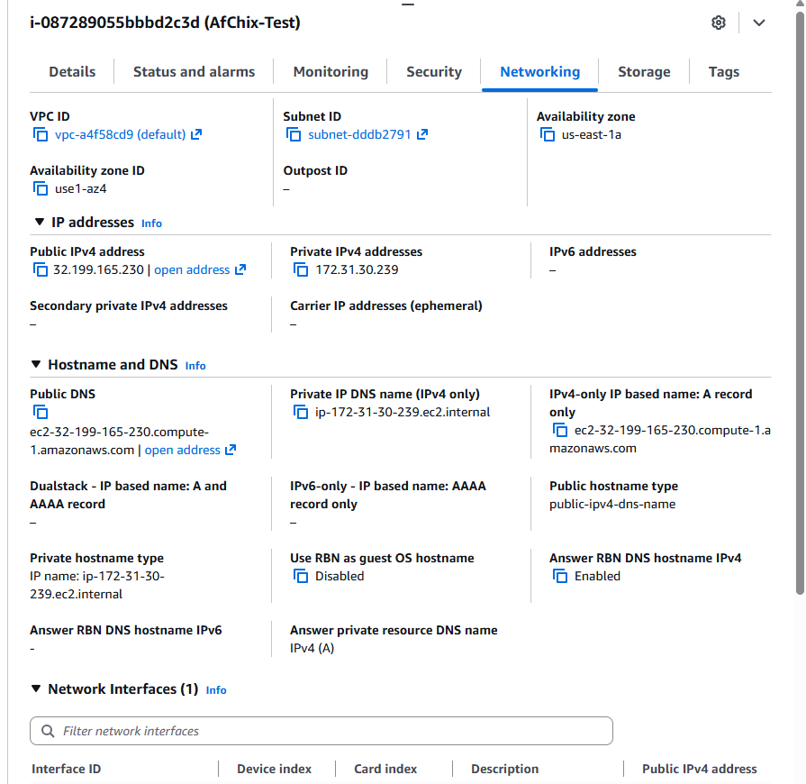
Network configuration of your instance
Storage Tab
Your machine's hard drive: 30 GiB EBS volume. This is where Windows and your files are stored.
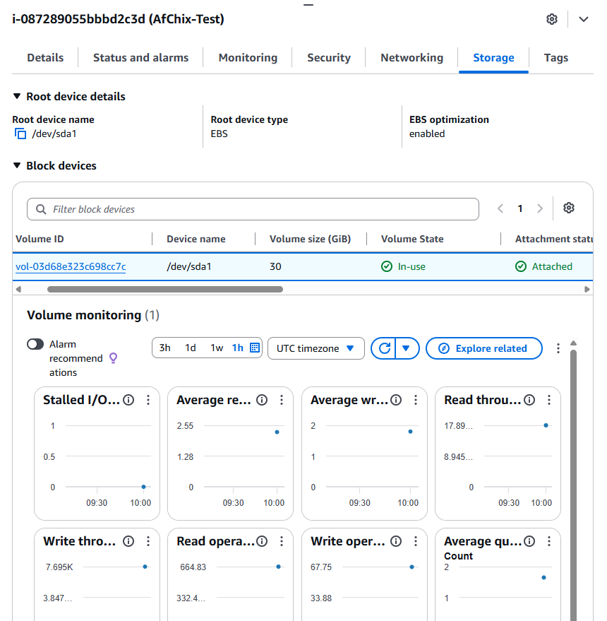
Your virtual hard drive — 30 GiB
Tags Tab
Labels on your instance. You should see: Name = AfChix-YourName
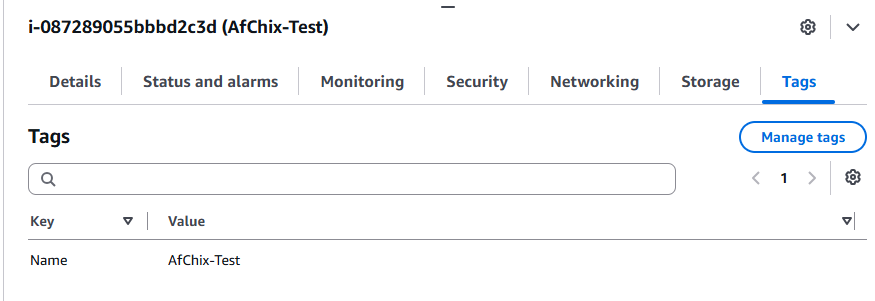
Tags help you identify your resources
Step 4: Connect to Your Virtual Machine
Now we'll connect to your Windows machine using Remote Desktop — you'll see and control the full Windows desktop from your laptop.
4.1 Get Your Windows Password
- Select your instance (checkbox)
- Click "Actions" > "Security" > "Get Windows password"
- Click "Upload private key file"
- Select the
.pem file you downloaded earlier
- Click "Decrypt password"
- COPY THE PASSWORD — you'll need it next
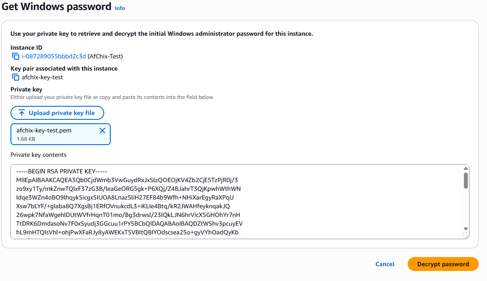
Upload your .pem file to decrypt the password
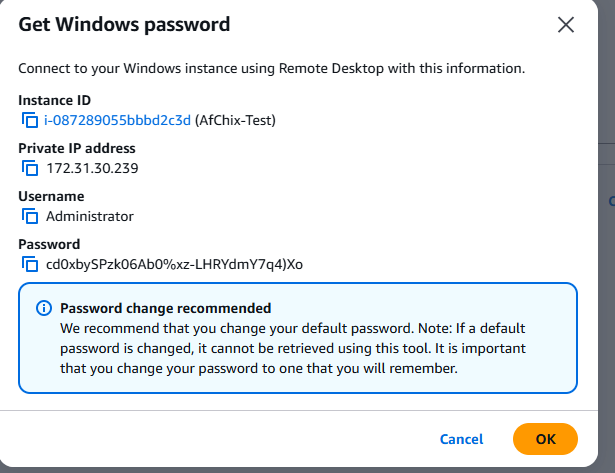
Copy this password! You'll need it to log in
⏱️ Note: The password may take up to 4 minutes to become available after launch. If you see "Password is not available yet", wait and try again.
4.2 Connect Using Remote Desktop
- Select your instance > Click "Connect"
- Click the "RDP client" tab
- Click "Download remote desktop file"
- Open the downloaded
.rdp file
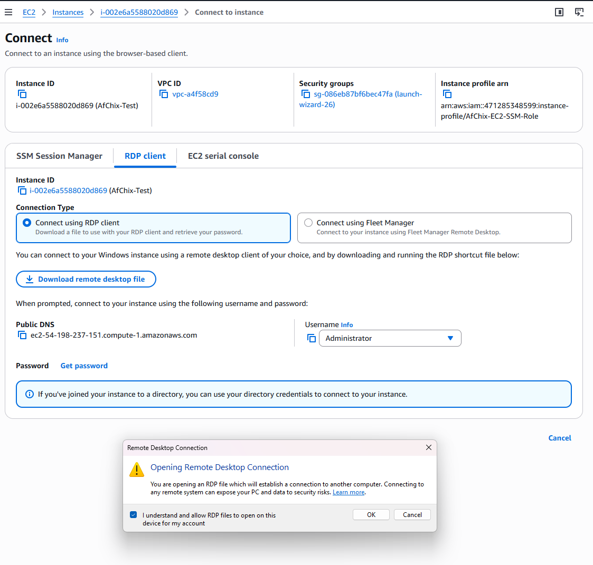
Download the remote desktop file
You'll see several popups — here's what to do with each:
- "Opening Remote Desktop Connection" → Click OK
- "Remote Desktop Connection security warning" → Check Clipboard, click "Connect"
- "Enter your credentials" → Click "More choices" > "Use a different account" → Username:
Administrator → Password: paste the password you copied → Click OK
- "Identity cannot be verified" → Click "Yes"
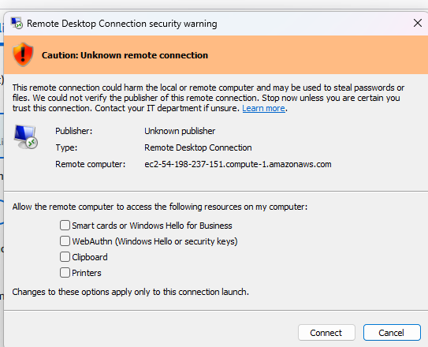
This is normal — click Connect
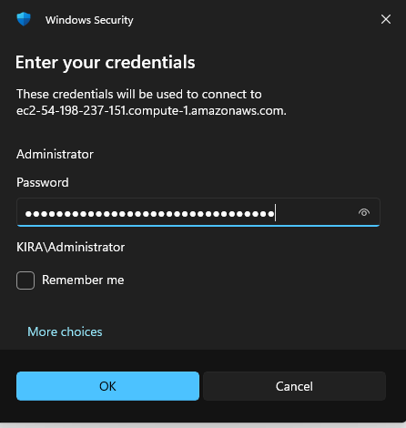
Enter Administrator and paste your password
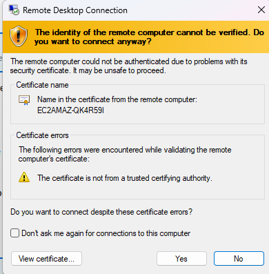
Click Yes — this is safe, you just created this machine
🎉 You should now see the Windows Server desktop! This is a real computer running in an AWS data center in the USA. You are controlling it from your laptop in Nairobi.
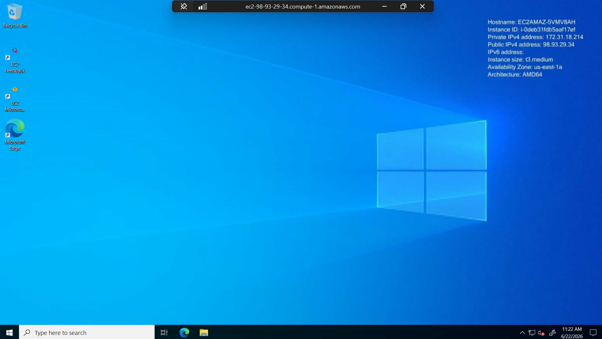
Welcome to your virtual machine in the cloud!
🖥️ Windows users: The steps above are for you — continue to Step 5.
Step 4 (Mac): Connect from a Mac
If you're using a Mac, follow these steps instead of the Windows RDP instructions above.
4M.1 Install Microsoft Remote Desktop
- Open the App Store on your Mac (the blue "A" icon in your dock)
- Search for "Microsoft Remote Desktop"
- Click Get then Install (it's free)
- Wait for it to download and install
⚠️ Do this BEFORE the workshop! App Store downloads can be slow on shared wifi.
4M.2 Get Your Password (Same as Windows)
- In the AWS Console, select your instance
- Click "Actions" > "Security" > "Get Windows password"
- Click "Upload private key file" and select your
.pem file from Downloads
- Click "Decrypt password"
- Copy the password (Cmd+C)
4M.3 Connect Using the .rdp File
- In the AWS Console, click "Connect" > "RDP client" tab
- Click "Download remote desktop file"
- The
.rdp file downloads to your Downloads folder
- Double-click the
.rdp file — it opens in Microsoft Remote Desktop
4M.4 Enter Credentials
- A login window appears asking for credentials
- Username:
Administrator
- Password: paste the password you copied (Cmd+V)
- Click "Continue"
4M.5 Accept the Certificate
- You'll see a warning: "The certificate could not be verified..."
- Click "Continue" — this is safe, you just created this machine
🎉 You should now see the Windows desktop in a window on your Mac! You can resize it, go full screen (green button), or use Cmd+F to toggle.
Helpful Mac Tips
- Copy/Paste between Mac and Windows: Cmd+C on Mac, then Ctrl+V inside the Windows session
- Full screen: Click the green circle (top-left of window) or use Cmd+F
- Exit full screen: Move mouse to top of screen, click the green circle again
- Right-click: Two-finger tap on trackpad, or Ctrl+click
Step 4 (Linux): Connect from Linux
If you're using Ubuntu, Fedora, or another Linux distro, follow these steps.
4L.1 Install Remmina (if not already installed)
Remmina is pre-installed on most Ubuntu systems. If not:
sudo apt install remmina remmina-plugin-rdp
On Fedora:
sudo dnf install remmina remmina-plugins-rdp
4L.2 Get Your Password (Same as Windows/Mac)
- In the AWS Console, select your instance
- Click "Actions" > "Security" > "Get Windows password"
- Upload your
.pem file and click "Decrypt password"
- Copy the password
4L.3 Connect with Remmina
- Open Remmina from your applications menu
- In the top bar, select RDP from the protocol dropdown
- In the address field, paste your instance's Public IPv4 address
- Press Enter to connect
4L.4 Enter Credentials
- Username:
Administrator
- Password: paste the decrypted password
- Domain: leave blank
- Click OK or Connect
4L.5 Accept the Certificate
- You'll see a certificate warning
- Click "Yes" or "Accept"
🎉 You should now see the Windows desktop inside Remmina!
Alternative: Using xfreerdp (command line)
If Remmina doesn't work, you can connect via terminal:
xfreerdp /v:YOUR-PUBLIC-IP /u:Administrator /p:'YOUR-PASSWORD' /size:1280x720
Replace YOUR-PUBLIC-IP and YOUR-PASSWORD with your actual values.
Helpful Linux Tips
- Copy/Paste: Ctrl+C on Linux, then Ctrl+V inside the Windows session
- Full screen: Press Ctrl+Shift+F in Remmina
- Exit full screen: Press Ctrl+Shift+F again
- If connection fails: Make sure the instance's security group allows port 3389 from your IP
✅ Connected? Whether you used Windows, Mac, or Linux — you should now be looking at a Windows Server desktop. Continue to Step 5 below. The remaining steps are the same for everyone.
Step 5: Deploy the AfChix Market Website
Now for the coolest part — you'll install a web server and deploy a real shopping website. Anyone in the world will be able to see it!
5.1 Open PowerShell
On your Windows remote desktop, click the Start menu and find "Windows PowerShell" (blue icon).
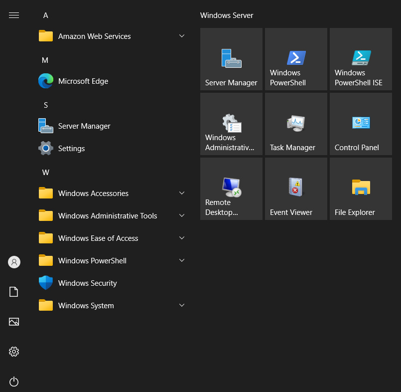
Find Windows PowerShell in the Start menu
💡 What is PowerShell? A command-line tool that lets you control the computer by typing instructions instead of clicking buttons. System administrators use this daily.
5.2 Install IIS (Web Server)
Type this command and press Enter:
Install-WindowsFeature -name Web-Server -IncludeManagementTools
What this does: Installs IIS (Internet Information Services) — Microsoft's web server software. Without it, your machine wouldn't know how to serve web pages to visitors.
Wait 1-2 minutes. You'll see "Success: True" when done.
5.3 Download the Website
Type this command:
Invoke-WebRequest -Uri "https://github.com/kira-PJ/afchix-cloud-workshop/archive/refs/heads/main.zip" -OutFile "C:\website.zip"
What this does: Goes to GitHub (where our website code is stored), downloads it as a zip file, and saves it to the server. Like downloading a file from the internet — but via command line.
5.4 Extract the Files
Expand-Archive -Path "C:\website.zip" -DestinationPath "C:\website" -Force
What this does: Unzips the downloaded file. Like right-clicking a .zip and choosing "Extract All".
5.5 Copy to Web Server Folder
Copy-Item -Path "C:\website\afchix-cloud-workshop-main\*" -Destination "C:\inetpub\wwwroot\" -Recurse -Force
What this does: Copies all website files into IIS's special folder (C:\inetpub\wwwroot\). Anything placed here automatically becomes a live website. Like putting products on the shelf in your shop — once they're there, customers can see them.
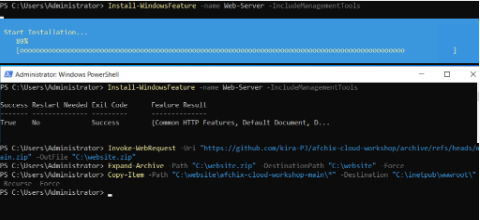
All 4 commands completed successfully
5.6 View Your Live Website!
- Go back to your laptop (not the remote desktop)
- Open a new browser tab
- Find your instance's Public IPv4 address in the EC2 Console
- Type in your browser:
http://YOUR-PUBLIC-IP (e.g., http://98.93.29.34)
🎉 You should see the AfChix Market website! A beautiful purple and pink shopping site with Kiondo bags, Maasai bracelets, coffee, and more!
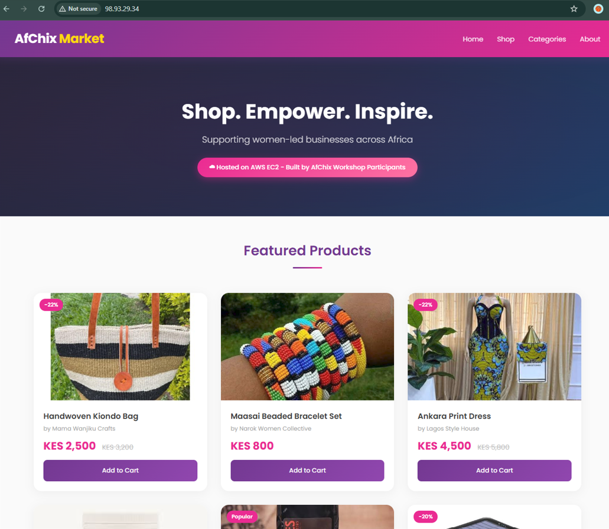
YOUR website, hosted on YOUR virtual machine, live on the internet!
💡 Notice the IP address in the browser bar — this is your machine's address on the internet. If you shared this IP with a friend in another country, they could see this website too. This is exactly how real websites work!
5.7 Personalize Your Website (Make it Yours!)
Let's add your name to the website. In PowerShell, type this command (replace YourName with your actual name):
(Get-Content "C:\inetpub\wwwroot\index.html") -replace "Built by AfChix Workshop Participants", "Built by YourName at AfChix Workshop" | Set-Content "C:\inetpub\wwwroot\index.html"
Example: If your name is Grace:
(Get-Content "C:\inetpub\wwwroot\index.html") -replace "Built by AfChix Workshop Participants", "Built by Grace at AfChix Workshop" | Set-Content "C:\inetpub\wwwroot\index.html"
What this does: Opens the website file, finds specific text, replaces it with your name, and saves. This is real web development — editing a live website!
Now refresh your browser — you'll see your name on the pink badge! 📸 Take a screenshot!
Step 6: Clean Up
When you're done with a cloud resource, always delete it. Otherwise it keeps running and costs money.
- Go to EC2 Dashboard > Instances
- Select your instance (checkbox next to your name)
- Click "Instance state" > "Terminate (delete) instance"
- Click "Terminate (delete)" to confirm
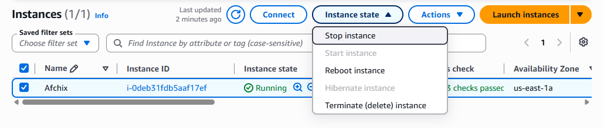
Select Terminate (delete) instance
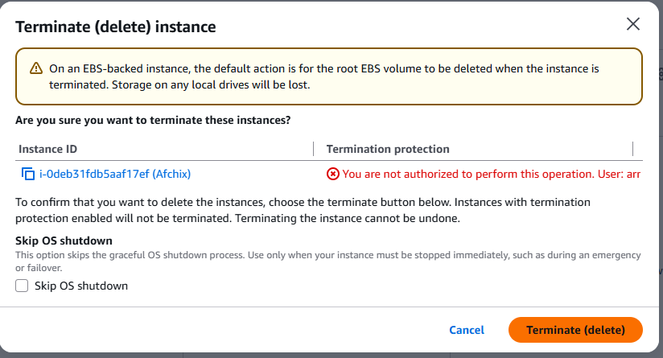
Confirm termination — your machine will be deleted
💰 Why this matters: A t3.medium costs ~$0.04/hour = ~$30/month if you forget. In the real world, forgetting to terminate is how people get surprise AWS bills!
🎉 Congratulations!
Today you:
- ✅ Logged into the AWS Management Console
- ✅ Launched a Windows virtual machine in a data center in the USA
- ✅ Connected to it remotely from your laptop in Nairobi
- ✅ Installed a web server
- ✅ Deployed a real e-commerce website to the internet
- ✅ Personalized it with your name
- ✅ Cleaned up your cloud resources
You now understand the basics of cloud computing. This is what cloud engineers, DevOps engineers, and solutions architects do every day — just with bigger, more complex systems.
What's next?
- Create your own free AWS account (aws.amazon.com — free tier available for 12 months)
- Start with the AWS Cloud Practitioner certification
- Join the AWS User Group Kenya community
Troubleshooting
| Problem | Solution |
|---|
| "Password not available yet" | Wait 4-5 minutes after launch, then try again |
| Cannot connect via RDP | Check instance is "Running" with "3/3 checks passed" |
| Connection timeout | Wait for status checks. Check you're using the correct Public IP |
| Wrong password | Make sure you uploaded the correct .pem file |
| Website not loading | Check you enabled "Allow HTTP traffic" during launch. Use http:// not https:// |
| RDP file doesn't open (Mac) | Install Microsoft Remote Desktop from App Store first |
| Instance won't launch | Ask the trainer — might be a quota issue |